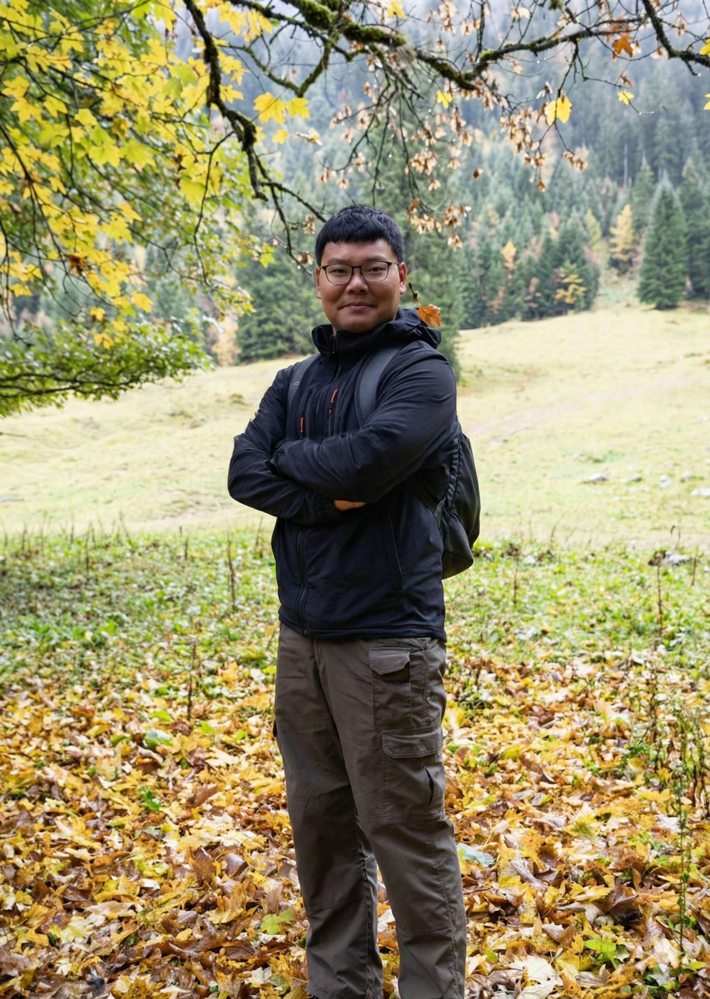

Dr. Zhijie ZhangPI Theoretical ecology | Experimental evolution 2024-now
Assistant Professor
Peking University
2020-2024
Postdoc
University of Konstanz
2016-2020
Ph.D Ecology
University of Konstanz
|
|
 |
Dr. Wenbo YuI use field observations and microcosms to investigate how climate change alters eco-evolutionary dynamics, species coexistence, and ecosystem functioning. My current project combines theory and experiments to study how global changes reshape these mechanisms. 2025-now
Postdoc
Peking University
2019-2025
Ph.D Ecology
East China Normal University
2023-2024
Visiting Student
University of Zurich
2016-2019
M.S. Freshwater Ecology
Jinan University
2012-2016
B.S. Environmental Science
Zhejiang Ocean University
|

|
Dr. Liru ChenI hold a Ph.D in ecology and specialize in invasion ecology, with particular interest in intra- and interspecific interactions 2025-now
Research assistant
Peking University
2018-2024
Ph.D Ecology
Fudan University
2014-2017
M.S. Ecology
Northwest A&F University
2010-2014
B.S. Biotechnology
Shihezi University
|
Yansong ZhangI am an incoming PhD student in the Zhang Lab. I use green algae to investigate and integrate Consumer-Resource dynamics with generalized Lotka-Volterra theory in multispecies communities. 2025-now
Research assistant
Peking University
2021-2024
M.S. Ecology
East China Normal University
2017-2021
B.S. Environmental Science and Engineering
Hohai University
Researchgate • Email • CV |